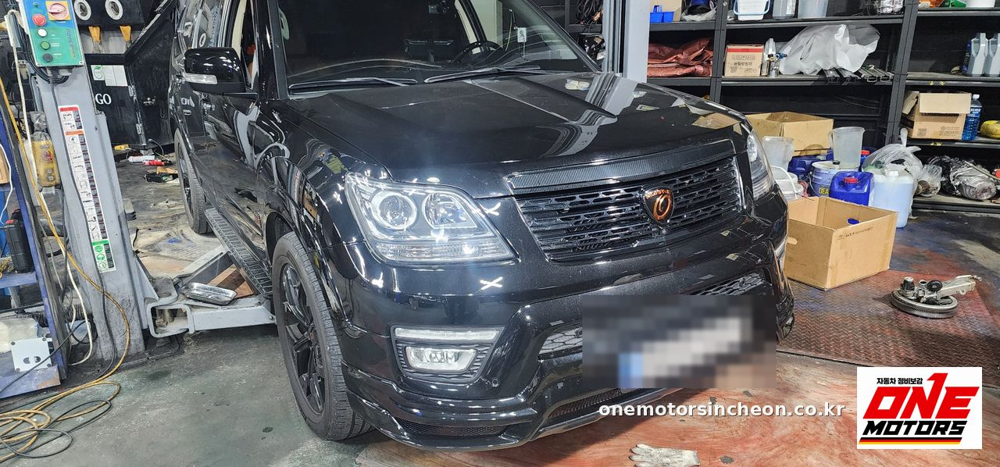
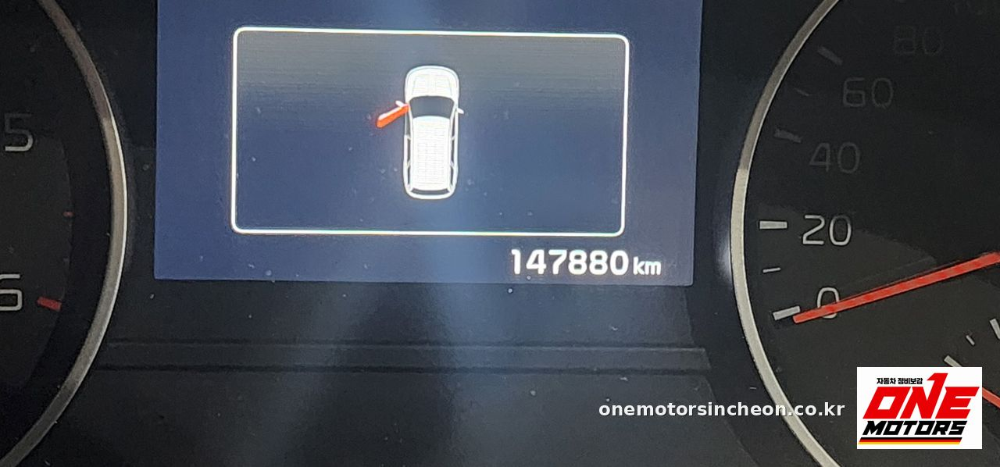
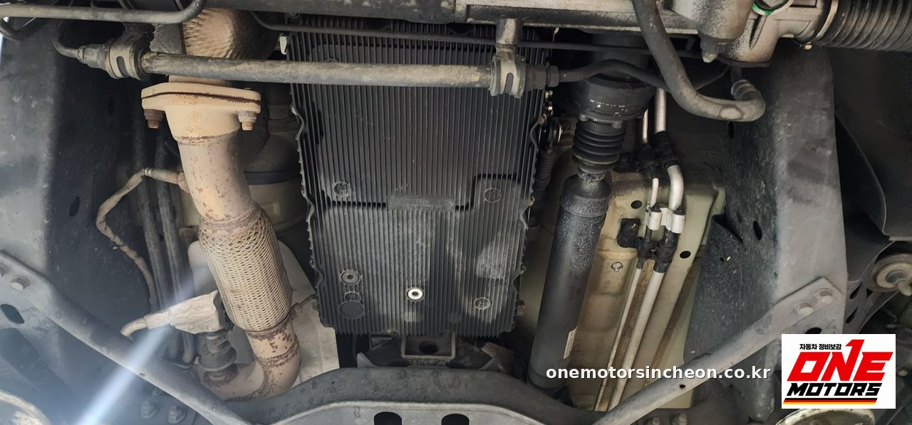
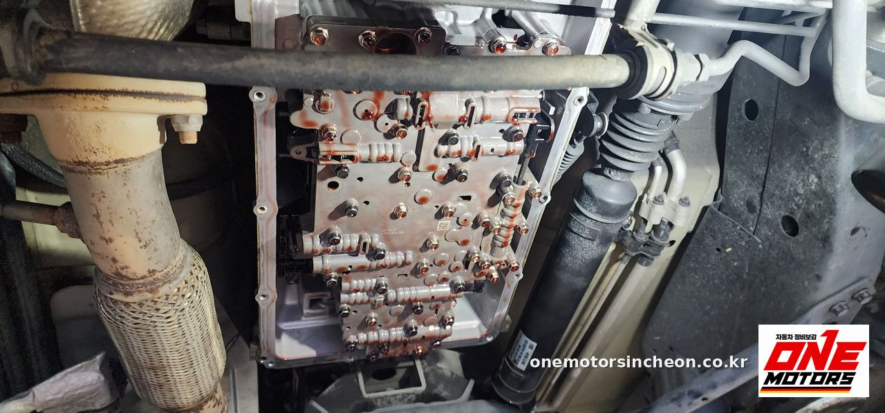
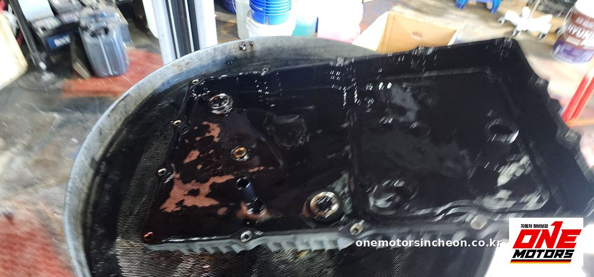
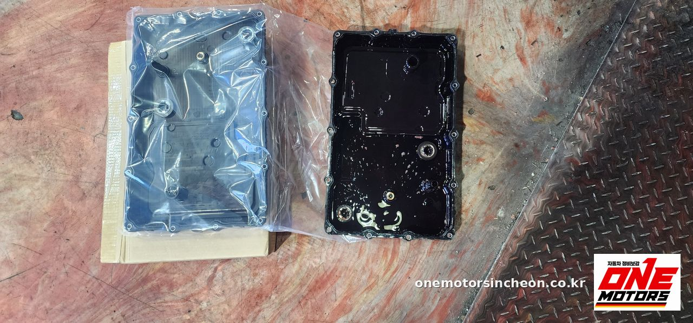
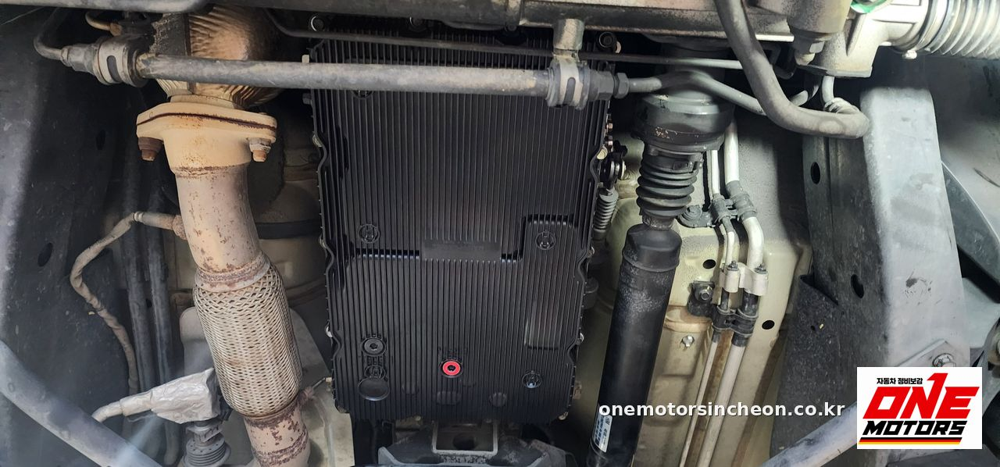
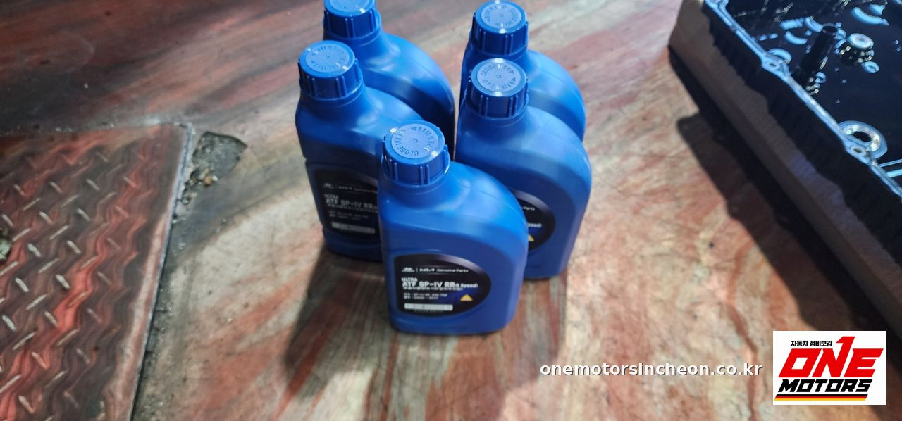
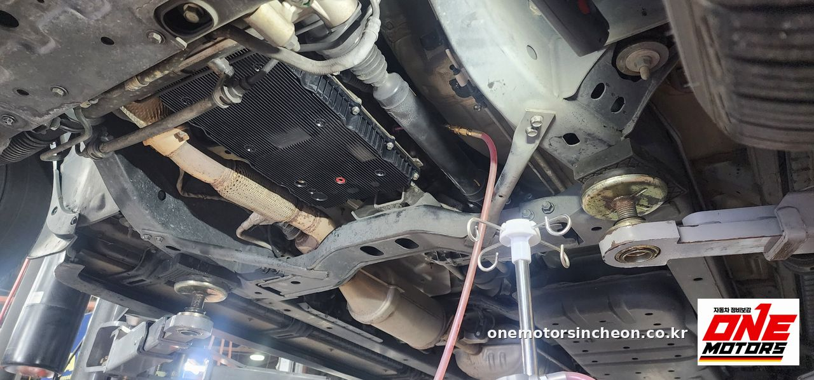

고장사례 및 검색 › 기아 모하비 2018년식
인천 미션오일 교환 — 기아 모하비 14만 km, 8단 자동변속기 오일팬 통째 교환과 ATF SP-IV RR 주입
- 차량
- 기아 모하비 2018년식 · 147,880 km
- 증상
- 미션오일 교환으로 들어오셨습니다. 기아 모하비 2018년식, 주행거리는 147,880 km였습니다
- 원인
- 미션오일 교환은 엔진오일처럼 아래 구멍 하나 열고 빼는 작업이 아닙니다. 이 차는 자동변속기 오일팬을 통째로 떼어냅니다.
오일팬을 떼면 그 안쪽으로 밸브바디가 바로 드러납니다. 사진에 보이는 복잡하게 생긴 판이 밸브바디입니다. 변속할 때 어느 쪽으로 기름을 보낼지 정하는, 변속기에서 머리에 해당하는 부분입니다. 평소에 열어볼 일이 거의 없는 자리라, 오일팬을 떼어낸 김에 눈으로 한 번 보고 갑니다.
떼어낸 오일팬 안쪽에는 그동안 가라앉은 것이 남아 있습니다. 변속기가 어떻게 지내왔는지가 여기에 남습니다. 요즘 차는 오일팬에 필터가 함께 붙어 나오는 경우가 많아서, 팬을 떼면 필터까지 한 번에 새것으로 갑니다. 사진에서 포장된 왼쪽이 신품, 오른쪽이 떼어낸 것입니다.
넣는 기름도 아무거나 넣으면 안 됩니다. 같은 제조사 차라도 변속기 단수에 따라 쓰는 기름이 다릅니다. 이 차에는 8단용 규격으로 넣었습니다. 사진의 통에 적힌 것이 그 규격입니다.
마지막이 양 맞추기입니다. 요즘 자동변속기는 밖에서 꽂아 보는 게이지가 없는 차가 많습니다. 차를 수평으로 올린 상태에서 아래쪽 레벨 플러그를 열고, 정해진 기름 온도 범위 안에서 넘치는 만큼만 흘려보내 맞춥니다. 적게 들어가면 변속이 뜨고, 많이 들어가면 거품이 생깁니다. 이 양 맞추는 단계가 사실상 작업의 절반입니다.
14만 km를 넘긴 차입니다. 미션오일은 눈에 보이는 증상이 나기 전에 가는 쪽이 결과적으로 덜 듭니다. 변속이 이상해진 다음에 손을 대면 그때는 기름만 갈아서 끝나지 않는 경우가 생깁니다. - 수리내역
- 리프트 상승 후 자동변속기 하부 확인 · 미션오일 배출 · 자동변속기 오일팬 탈거 · 밸브바디 및 접촉면 상태 확인 · 접촉면 청소 · 신품 오일팬(필터 일체형) 장착 · 신품 미션오일 주입 — ATF SP-IV RR · 기름 온도 확인 후 레벨 플러그로 유량 조정 · 변속 상태 확인 · 누유 재점검
- 교환부품
- 자동변속기 오일팬 (필터 · 가스켓 일체형) · 미션오일 (ATF SP-IV RR, 8단용)
정비 사진 9장









이런 증상으로 찾아오십니다
- 인천 미션오일 교환
- 인천 미션오일
- 인천 미션오일 교환 잘하는 곳
- 인천 미션오일 전문
- 인천 자동변속기 오일 교환
- 인천 오토미션 오일 교환
- 인천 국산차 미션오일
- 인천 모하비 정비
- 인천 대형 SUV 정비
- 제물포구 미션오일 교환
- 인천 송현동 정비
- 원모터스 인천점
- 모하비 미션오일
- 모하비 미션오일 교환
- 모하비 8단 미션오일
- 기아 모하비 자동변속기
- 모하비 14만km
- 모하비 소모품 교환
- ATF SP-IV RR
- SP-IV RR 8단
- 자동변속기 오일 규격
- 미션오일 규격
- 미션오일 아무거나 넣어도 되나요
- 자동변속기 오일팬 교환
- 미션 오일팬 필터 일체형
- 오일팬 떼면 보이는 것
- 밸브바디
- 미션오일 레벨 플러그
- 미션오일 유량 맞추기
- 미션오일 게이지 없는 차
- 미션오일 언제 갈아요
- 미션오일 교환 주기
- 14만km 미션오일
- 미션오일 안 갈면 어떻게 되나요
- 미션오일 드레인만 하면 되나요
- 오일팬까지 갈아야 하나요
- 미션오일 교환 시간 얼마나 걸리나요
- 국산차도 미션오일 갈아야 하나요
- 변속이 예전 같지 않아요
비슷한 증상이 있으시면 전화로 상담해 주세요. 차종과 연식, 증상만 알려주시면 예상 원인을 안내해 드립니다.
원모터스 인천점는 제조사 공식 서비스센터가 아닌 독립 정비업체입니다. 정비 내용은 차량 상태에 따라 달라질 수 있습니다.